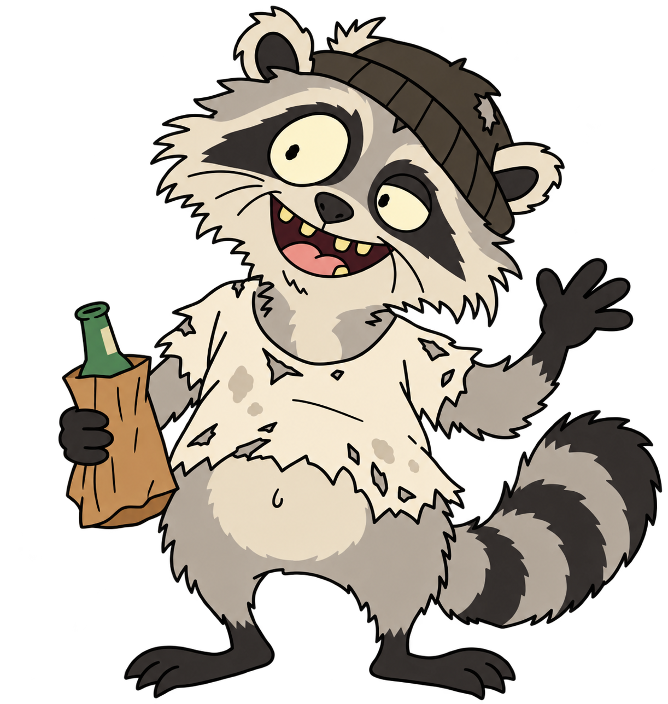

Download & install.
Run Frank on your computer with Node.js, or upload to PHP hosting with HTTPS. The guide walks you through either option.
Get Frank on GitHub ↗A browser companion concept · for digital people
For everyone who lives on the screen.
Review your day and vent out.
Then wind down and talk shit by
the bins.
Connect your own AI API key to chat.
Try the demo, then
download and host yourself.

F** it, come hang out.Make Frank yours
The demo needs nothing. Live AI chat needs your own installation and an API key.
Full setup guide ↗Run Frank on your computer with Node.js, or upload to PHP hosting with HTTPS. The guide walks you through either option.
Get Frank on GitHub ↗In Settings, choose a provider and follow its key link. Create a key in your provider account. Check its free-tier limits or pricing first.
Your ChatGPT or Claude subscription is separate from API access.
Open frank.php on your host, or the local address
shown by the launcher. In Settings, paste your key and click
Save key. Once connected, start chatting.
The day’s done. Pull up a crate.
Meet the character first. Try a scripted chat, feed Frank or adjust his character. No key needed for the demo.
For a real conversation, connect your own AI. Your installed Frank keeps notes and editable memory in your browser. Adjust his writing style in Settings.
Meet Frank (Demo)Built by a digital person. For his kind of people.